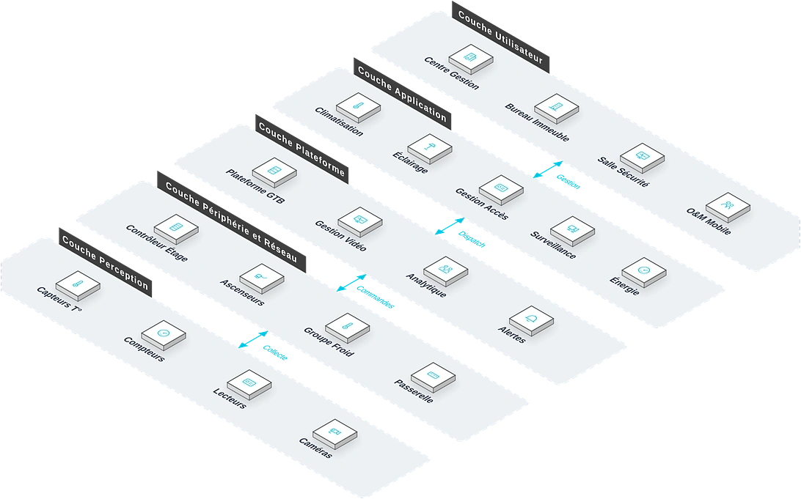

Pour les exploitants d'immeubles de bureaux, de résidences hôtelières, de bâtiments hospitaliers et de centres commerciaux, une solution intelligente de gestion du bâtiment fondée sur le jumeau numérique BIM+IoT qui répond aux points de douleur clés que sont la gestion fragmentée, la forte consommation d'énergie et la lenteur de réponse dues au fonctionnement en silos des sous-systèmes, réalisant gestion unifiée et contrôle coordonné des équipements.
Vue d'ensemble
Fournit aux exploitants d'immeubles de bureaux, de résidences hôtelières, de bâtiments hospitaliers et de centres commerciaux une solution intelligente de gestion fondée sur le jumeau numérique BIM+IoT, répondant à la gestion fragmentée, à la surconsommation et à la lenteur de réponse dues aux sous-systèmes isolés, et réalisant la gestion unifiée et le contrôle coordonné des équipements.
Applicable à : Immeubles de bureaux, résidences hôtelières, hôpitaux, centres commerciaux.
- Jumeau numérique BIM+IoT pour une gestion visualisée sur tout le cycle de vie du bâtiment
- Stratégies d'optimisation énergétique par IA pouvant réduire la consommation de 15 % à 25 %
- Plateforme unifiée brisant les silos, réduisant les coûts de personnel d'exploitation de plus de 30 %
- Déployé avec succès dans le projet du Service fédéral des recettes intérieures de Lagos (FIRS)
Bénéfices : Efficacité d'exploitation accrue, consommation d'énergie réduite, sécurité renforcée, expérience des occupants améliorée, valeur des actifs immobiliers valorisée.
Défis Métier
Dans l'exploitation des bâtiments modernes, les clients font souvent face à des sous-systèmes en silos, une gestion énergétique grossière et une réponse de maintenance lente ; ils ont besoin d'une plateforme de gestion de bâtiment unifiée, reliée par la donnée et à la liaison intelligente.
Sous-systèmes en silos
GTB, sûreté, incendie, contrôle d'accès et parking tournent indépendamment, sans données partagées.
Gestion énergétique grossière
Pas de sous-comptage des fluides ; les profils d'usage sont flous et les mesures d'économie manquent de données.
Réponse de maintenance lente
Les pannes sont découvertes par inspection manuelle ; les réparations réactives coûtent cher.
Les silos d'information renchérissent l'exploitation
Une gestion morcelée maintient des factures d'énergie élevées et une expérience médiocre des occupants ; coûts d'exploitation et valeur d'actif pâtissent ensemble.
Gestion intégrée unifiée
Une plateforme doit relier les données des sous-systèmes et la liaison inter-systèmes.
Économies d'énergie pilotées par la donnée
Des algorithmes d'IA doivent analyser les profils de consommation et produire des stratégies d'optimisation.
Scénarios typiques :
Rôles concernés : Gestionnaires d'immeuble, ingénieurs d'exploitation, directeurs sécurité, personnel administratif.
Architecture
Bâtiment Intelligent repose sur une topologie métier à cinq couches : Centre Gestion, Bureau Immeuble et autres bureaux utilisent les applications quotidiennes comme Climatisation et Éclairage, coordonnés par la couche plateforme ; les équipements de périphérie (Contrôleur Étage, Ascenseurs) sur site raccordent les équipements de perception (Capteurs T°, Compteurs) : les données montent vers la plateforme et les commandes descendent jusqu'au terrain.

Disposition métier : la couche utilisateur regroupe les bureaux (Centre Gestion, Bureau Immeuble…) ; la couche application porte les fonctions quotidiennes ; la plateforme fournit Plateforme GTB et Gestion Vidéo ; la couche périphérie et réseau situe les équipements sur site (Contrôleur Étage, Ascenseurs…) ; les équipements de perception sont déployés sur Capteurs T°, Compteurs et le terrain.
Modules clés
Intégration IBMS
Intègre GTB, sûreté, incendie, contrôle d'accès, parking, énergie et plus de 20 sous-systèmes.
Jumeau numérique BIM+IoT
Données BIM et IoT fusionnées pour une gestion du bâtiment visualisée en 3D sur tout le cycle de vie.
Optimisation énergétique par IA
Les algorithmes analysent les profils d'usage et réduisent la consommation du bâtiment de 15 à 25 %.
Liaison incendie intelligente
Une alarme incendie libère automatiquement les accès, bascule la diffusion, rappelle les ascenseurs et démarre la désenfumage.
Services mobiles aux occupants
Réservation de visiteurs, de salles et demandes d'intervention réunies en un point.
Capacités d'intégration :
- Intègre GTB, sûreté, incendie, contrôle d'accès, parking, énergie et plus de 20 sous-systèmes
- Les alarmes incendie déclenchent libération des accès, bascule de diffusion, rappel d'ascenseurs et désenfumage
- Le jumeau numérique fusionne BIM et IoT pour une visualisation 3D
Avantages et livraison
Avec la technologie de jumeau numérique BIM+IoT et une capacité d'intégration unifiée, nous aidons à élever l'efficacité d'exploitation du bâtiment et à réduire le coût énergétique, via la modélisation BIM, l'intégration des sous-systèmes, le déploiement de la plateforme et des bilans énergétiques périodiques.
Avantages différenciants
Gestion visuelle par jumeau numérique
Fusion BIM + IoT : vision sur tout le cycle de vie du bâtiment, état des équipements en un écran.
Économies d'énergie par IA
Stratégies d'optimisation réduisant efficacement la consommation et les coûts d'exploitation.
Fin des silots d'information
Une plateforme intègre tous les sous-systèmes : moins de main-d'œuvre, plus d'efficacité.
Cas de référence validé
Déployé avec succès dans un immeuble administratif, maturité éprouvée en grand projet.
Pilotage intelligent inter-systèmes
Liaisons croisées refermant la boucle alerte-traitement avec une réponse rapide.
Expérience locataire améliorée
Confort accru et services rapides : satisfaction et taux de renouvellement en hausse.
Processus de mise en œuvre
Étude des besoins
Recenser l'activité du bâtiment, les sous-systèmes et les points de friction.
Modélisation BIM
Modèle 3D avec positions spatiales des équipements.
Intégration des sous-systèmes
Raccordement de tous les sous-systèmes à la plateforme IBMS.
Déploiement plateforme
Supervision unifiée, analyse énergétique et alertes en ligne.
Connexion jumeau numérique
Fusion BIM + IoT pour la visualisation 3D.
Formation et remise
Former les équipes techniques avant remise.
Garantie de service
Valeur client
Efficacité d'exploitation accrue, énergie réduite, coûts de main-d'œuvre diminués, sécurité renforcée et valeur immobilière rehaussée.
Garantie d'un an
Télémaintenance
Bilans énergétiques périodiques
Évolutions continues
Études de cas
Système de gestion intelligente du bâtiment du Service fédéral des recettes intérieures de Lagos (FIRS)
Contexte : Le projet du Service fédéral des recettes intérieures de Lagos (FIRS) est un grand immeuble administratif aux nombreux systèmes électromécaniques et de sécurité.
Défi : Sous-systèmes indépendants, gestion dispersée, absence de vue unifiée de l'état des équipements et de l'énergie.
Solution : Déploiement d'un système intégré couvrant GTB, vidéosurveillance et liaison incendie.
Résultats : Gestion unifiée et pilotage coordonné des équipements : un cas de référence pour les immeubles administratifs intelligents.